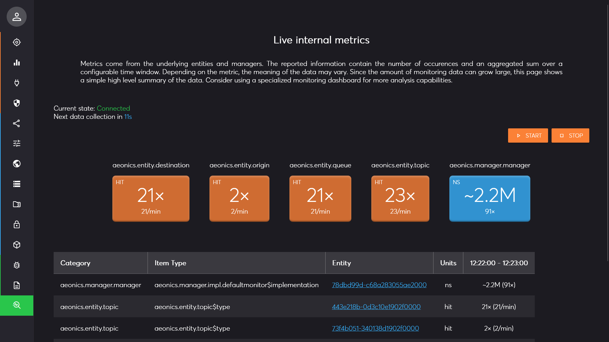
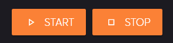
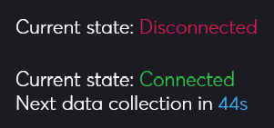
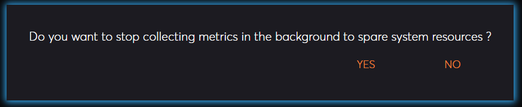
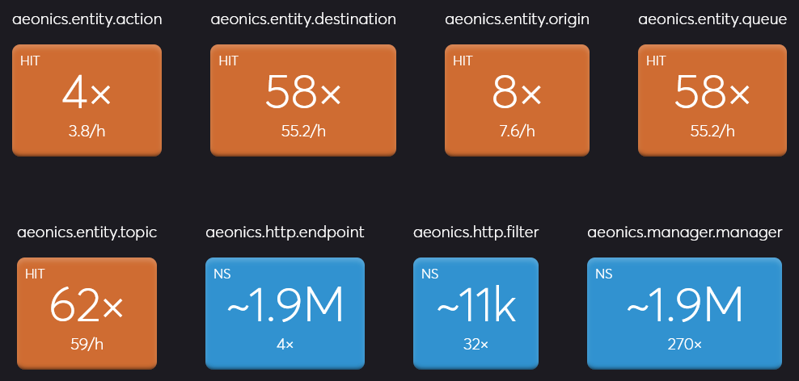
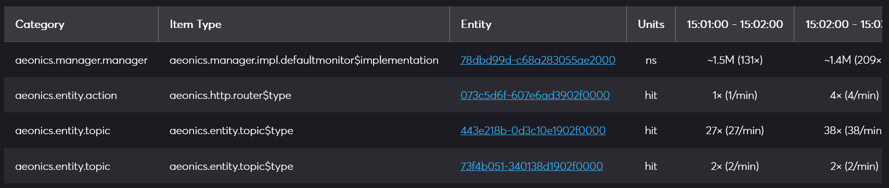

Management Interface Page: Metrics
Description
This page allows display system metrics and counters in real time. Metrics are time-based which means that the information is reset and recomputed at regular interval. By default, the reset interval is 60 seconds

Start / Stop
There are 2 actions available in the top right part of the page: Start and Stop.

When you click on the Start button the collection happens directly. Once the live capture is enabled, the connection indicator will be adjusted in the top left part of the page. The second line will show approximatively how much time is left before the next time-window of data.

When you click on the Stop button, the live stream in interrupted. You have the possibility to keep the internal metrics collection active (No button), or completely stop it to spare computing resources (Yes button).

Metrics Details
The metrics system in this framework provides a structured, time-windowed approach to monitoring real-time data across the application. Metrics are organized into a four-level hierarchy: category, type, entity ID, and metric name, allowing fine-grained tracking of specific operations or resources.
Each metric is monitored by two counters. The first counter tracks the occurrences, counting how often the metric is recorded. The second counter is a value sum, accumulating all provided values for that metric within the specified time window.
At the end of each window, these metrics are emitted as a snapshot, providing a detailed summary of activity, then the counters reset, ready to capture fresh data for the next time interval. This structure enables precise, time-bound insights into system performance and behavior without retaining outdated or redundant data.
The main central region is divided in 2 main sections. The first one (top) displays simple cards that aggregate the metrics values per category as long as the monitoring is active in the page. This allows to smooth out the values over time. The cards displayed in orange are for counter-only metrics, and the ones in blue are for those that provide an accumulated value.

On the example above, we can see that the aeonics.http.filter category was activated 32 times with an average of
11k nanoseconds (0,01 milliseconds).
The second section (bottom) displays a table with all the details of the metrics. At each collection, a new column is appended at the right of the table. If new elements are encountered, new lines may appear at the bottom of the table.
